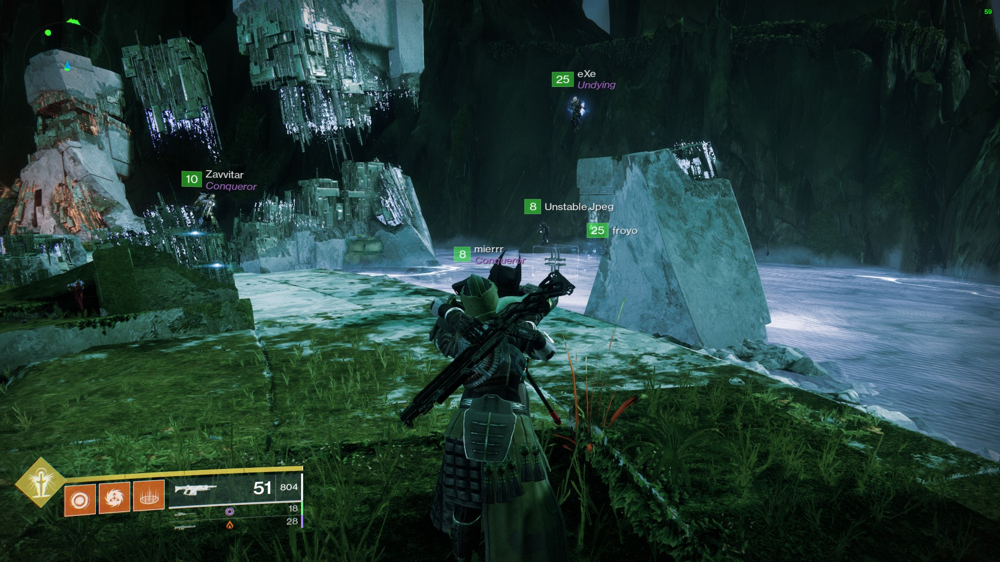
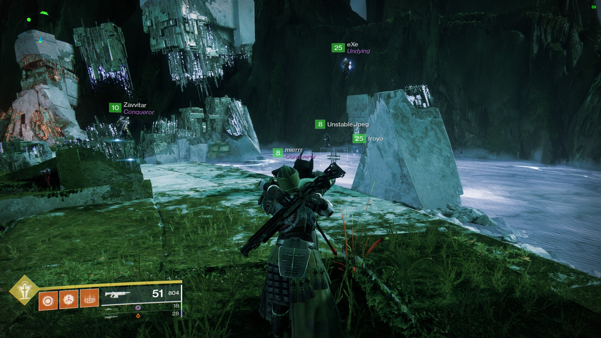

Destiny 2
Destiny 2 ist ein Mehrspieler-Computerspiel, entwickelt von Bungie, Inc. und veröffentlicht von Activision Publishing, Inc. Bungie und Activision wurden Jahre 2019 unabhängig voneinander. Der Ego-Shooter ist ein reines Onlinespiel und wurde für die PlayStation 4 und die Xbox One am 6. September 2017 veröffentlicht. Die Version für Microsoft Windows wurde am 24. Oktober 2017 veröffentlicht. Außerdem erschien das Spiel für Google Stadia, Xbox Series X und S sowie die PlayStation 5.Destiny 2 ist der Nachfolger des 2014 erschienenen Destiny.
Die Spielewelt ist eingebettet in ein Science-Fiction-Szenario. Jeder Spieler schlüpft in die Rolle eines sogenannten Hüters, Beschützer der letzten verbliebenen sicheren Stadt auf der Erde. Dazu nutzt dieser Hüter eine „Licht“ genannte Macht um die Stadt vor verschiedenen außerirdischen Rassen zu verteidigen.
Trailer für die Aktuelle Season:
Der Spieler kann sich zwischen drei Klassen der Hüter entscheiden:
Es gibt verschiedenste Waffen mit unterschiedlichen Perks in unzähligen Varianten:
Eine Gute Seite die dabei hilft einen Überblick über alle Waffen und deren zugehörigen Perks zu behalten ist d2gunsmith Hier kannst du eine Waffe deiner Wahl auswählen und gleich sehen, welche Perks gut für diese sind und welche Perks generell für diese Waffe verfügbar sind.
Erweiterungen:
Destiny 2 bietet momentan 4 Erweiterungen an, welche für Geld erworben werden können. Kaufen kann man diese hier. Man kann auf der Seite ebenfalls eine Ingame Währung "Silver" für echtes Geld erwerben und damit Cosmetics kaufen, die das Erscheinen Ihrer Rüstung oder Waffen ändern.
Clan System:
Das Spiel verfügt über ein fortgeschrittenes Clan System. Spieler können Ihre eigenen Clans erstellen und ihre freunde zu diesen Einladen und gemeinsam an Clan Aktivitäten teilnehmen und durch diese mehr Beute erringen. Bungie bietet auch ein System an, welches Spielern erlaubt nach einem Clan zu suchen.Suchen Sie momentan nach einem Clan? Dann ist hier der richtige Ort dafür.
Neue Freundschaften und eine Menge Spaß! :)
 
